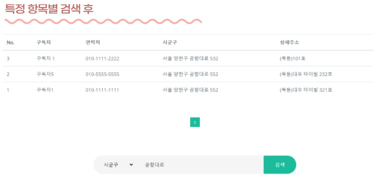

Main
Header, Content, Footer
BinFree 서비스의 시작
구독 후 서비스 과정 소개
Spring-security authentication : Anonymous page
Header
<로고>, <소개>, <구독>, <구인>, <고객센터>, <굿즈>, <로그인>
로그인 성공시, 부여된 권한에 따라 관리자/마이페이지 tab으로 변경
권한에 따라 다른 진입페이지를 dropdown list로 표기
Content
<분리수거 animation> , <구독리뷰 캐러셀>
서비스의 주제를 알리기 위한 시각 효과 1) animation
서비스의 주제를 알리기 위한 시각 효과 2) youtube bysocial 동영상 link
서비스의 현황을 알리기 위한 시각 효과 3) 구독자수, 직원수, 만족도 출력 section
최신 순 5개의 리뷰게시글을 보여주는 캐러셀 배치
Content
<이용약관>, <챗봇>, <맨위로 버튼>
webpage 이용의 편리성을 위한 요소를 footer에 배치하여 전 page에 사용가능 하도록 구성함
카카오 API를 활용한 1:1 상담 챗봇 사용
page 탐색을 위한 scroll-up JS button 배치
Introduction
Section1, Section2, Section3
BinFree의 전체적인 소개 후 구독결제까지 흥미를 이끌도록 구성
Spring-security authentication : Anonymous page
Section1. intro-1
분리수거, 환경 등 서비스의 컨셉 설명
이미지로 설명 페이지 구성
Section2. intro-2
구독 서비스의 구성 및 서비스 과정 설명
이미지 사용하여 페이지 구성
Section3. intro-3
<구독 결제 페이지로 link>
소개페이지 탐색 후, 빠른 구독으로 이어질 수 있도록 link 배치
Recruiting
Resume Form
BinFree의 직원, 이웃 도우미 Buddy 지원 이력서 Form 제공
Spring-security authentication : Anonymous page
Resume For Buddy page
Buddy에 지원할 수 있는 이력서 Form 제공
- form tag로 data submit
유효성 검사로 공백은 submit 불가
Register
Join Form
BinFree 구독자, BFamily 가입 Form 제공
Spring-security authentication : Anonymous page
Join Us page
BinFree서비스 가입 페이지
- form tag로 data submit
Spring-security 사용, 권한 부여 후 접근가능한 페이지를 설정
유효성 검사 : JS 사용
- ID : email형식 검사
- password : 영문자 / 특수문자 / 숫자 조합, 총 글자수 검사
- 전화번호 : 010, 지역번호 후 자동 '-' 추가 하여 전화번호 형식으로 자동 변환
LogIn
login-1 page
Spring-security를 사용한 일반가입 후 로그인 페이지
Spring-security authentication : Anonymous page
Login. BFamily Login page
Spring-security통한 일반 가입자 로그인
- 암호화된 비밀번호 구현
- Authentication : 'ROLE_MEMBER' 부여
- Login-success 후 : Main으로 이동 및 권한에 따른 Header변화(가입시 이름 표기)
LogIn
login-2 page
kakao간편로그인으로 이동 후 DB와 비교하여
emailID 중복확인 후 가입/로그인 처리
Spring-security authentication : Anonymous page
Login. Kakao Login
oauth2.0 카카오 간편가입/로그인
- 암호화된 비밀번호 구현
- Authentication : 'ROLE_KAKAO' 부여('ROLE_MEMBER'와 같은 기능 사용 가능)
- Login-success 후 : Main으로 이동 및 권한에 따른 Header변화(카카오 닉네임 표기)
Find your password
Forgot your password?
Login페이지에서 비밀번호 찾기 link
임시번호를 email로 발급하는 기능 구현
Spring-security authentication : Anonymous page
Find PW
가입시 이름, email로 인증후 임시번호 발급
- 가입시 사용한 email로 임시번호 발급
- 임시번호지만 DB에는 암호화되어 저장
- 임시번호로 로그인 후, 사용자가 mypage에서 비밀번호 변경하여 사용
Subscribe
Type of BinFree service
BinFree 3개의 구독상품 구분 page
진입 Spring-security authentication : Anonymous
구독-결제 Spring-security authentication : ROLE_MEMBER, ROLE_KAKAO
Subscribe BinFree
Anonymous로 진입시,
- 페이지 진입은 누구나(Anonymous), 리뷰댓글도 열람 가능
- 리뷰댓글은 회원중 유료 구독을 한 사용자만 mypage에서 작성 가능하도록 처리
구독 유형 선택
- 구독유형에 따라 기간과 가격이 달라짐
- 각기 다른 유형값을 AJAX 처리로 구현
- 선택된 유형은 결제페이지에서 확인 가능하게 구현
구독-결제 전 검사
- 구독은 회원만 가능(ROLE_MEMBER, ROLE_KAKAO) 하도록 setting
- 구독시 기입하는 우편번호가 DB에서 !null일 경우, 구독권이 있음으로 판단하여 mypage로 이동 처리
Review-1
BFamily's Review
mypage내, 구독정보가 있는 사용자만 작성
Spring-security authentication : ROLE_MEMBER, ROLE_KAKAO
Review
리뷰 작성(Create)
- mypage의 구독정보tab에서 활성화
- 구독이력이 있는 가입자만 작성가능
- 별점을 시각화하여 등록
- Success : 등록 성공시 alert창 알림
Review-2
BFamily's Review
구독 장려를 위한 리뷰댓글을 리뷰페이지에 하나로 구성
Spring-security authentication : ROLE_MEMBER, ROLE_KAKAO
Review
리뷰 수정/삭제(Update/Delete)
- 작성자 email과 현재 로그인한 사용자의 email 비교 후 작성자만 수정 삭제 가능함을 구현
비회원/로그아웃 시 작성된 리뷰 읽기만 가능
별점 평균 출력
- 만족도를 시각화 하여 출력하고 평균계산을 통해 수치화
Payment-1
Confirm, Insert Address
구독상품 확인 Section
Daum 우편번호/주소API를 사용한 주소 입력 Section으로 구성
Spring-security authentication : ROLE_MEMBER, ROLE_KAKAO
Payment-1
선택한 구독상품 확인(Confirm)
- 3가지 유형의 서비 스중 원하는 유형을 선택했는지 결제 전 확인하는 section 추가
구독주소 입력
- 서비스를 이용할 주소 입력. 입력 후 DB에 저장되므로 구독 이력으로 활용함
- 우편번호는 매칭될 Buddy를 찾는 기능에 활용하므로 같은 우편번호를 사용하는 지역이라면 같은 값이 들어가도록 구현해야함
- 이에 따라, Daum의 주소/우편번호 API를 사용하여 일정한 형태의 값이 insert되도록 구현
Payment-2
Import API: payment, Matching
결제 / Buddy와 매칭
입력한 주소 중 우편번호를 이용하여 Buddy와 매칭
Payment-2
결제
- Import API를 사용, 통합 결제 Inicis 구현
결제 성공 후 Buddy Matching
- Success : USERS DB에 값을 저장하고 로딩page를 출력하며 Matching 시작
- USERS DB의 zipCode와 BUDDY DB의 zipCode와 일치하면 Matching
- matching된 담당버디는 각 사용자의 mypage에서 정보를 확인하도록 구성
우편번호를 비교한 이유
광범위한 지역을 제한하고 가까운 거리의 이웃이라는 개념을 살리면서, 서비스 구역을 특정하기 위함
Goods-1
For Bfamily page
이벤트상품 페이지
회원 전용 페이지로 구독장려를 위한 이벤트성 페이지
Spring-security authentication : ROLE_MEMBER, ROLE_KAKAO
Goods List
전체 이벤트 상품 LIST
- 클릭시 상세페이지 이동
- 상품을 6개로 나누어 관리 : 초과하면 페이지 생성 후 이동(paging)
권한에 따른 페이지 변화
- Admin 로그인 시 글등록 버튼 활성화
Goods-2
For Bfamily page
이벤트상품 상세 페이지
회원 전용 페이지로 구독장려를 위한 이벤트성 페이지
Spring-security authentication : ROLE_MEMBER, ROLE_KAKAO
Goods details page
상세 상품 페이지
- 제품 상세 정보확인 페이지
- 링크 공유 api를 이용해 facebook,twitter 등 해당 상품 링크를 공유 가능
권한에 따른 페이지 변화
- Admin 로그인 시 상품정보변경 / 삭제 버튼 활성화
Goods-3
Admin : Item register / update page

상품 등록
|

상품 수정
|
관리자 계정 : 상품 등록/수정 페이지
관리자 로그인시, 상품 추가 및 수정 기능 활성화
Spring-security authentication : ROLE_ADMIN
Goods details - admin(Register/Update)
상세 상품 페이지
- 관리자는 제품을 등록하고 상세정보를 수정할 수 있는 권한이 주어짐(ROLE_ADMIN)
- Drag & Drop 기능으로도 파일 업로드 가능하도록 구현
Mypage-1
User Info tab
ROLE_MEMBER / ROLE_KAKAO 로그인시 Header 변화로 mypage 진입
Mypage : tab1(가입자정보), tab2(구독정보)로 구성
가입자 정보 보기 / 수정 페이지
Spring-security authentication : ROLE_MEMBER, ROLE_KAKAO
Mypage - User Info update / membership withdrawal
Mypage : 가입자 정보 / 탈퇴기능 페이지
- 진입시 가입시 기입한 정보 출력
- ID인 email 제외, 전화번호 수정이 가능
- 암호화된 password를 분리하여 수정가능 하도록 구성
- BinFree회원 탈퇴 기능 구현
비밀번호 수정을 분리한 이유?
같은 번호라도 매번 암호화를 새로하며, 빈칸도 암호화하는 경우가 발생하므로,
사용자가 수정하고 싶을 경우에만 사용하게 하고 빈칸 입력을 방지, 가입시와 동일한 유효성 검사를 위해 분리함.
사용자가 수정전 비밀번호를 확인 할 수 있도록 현 input type인 password를 text로 변화시키는 JS
Mypage-2
Subscribe Info tab
Mypage : 구독자 정보 보기 / 수정 / 매칭된 버디정보 보기 페이지
Spring-security authentication : ROLE_MEMBER, ROLE_KAKAO
Mypage - Subscriber info update
Mypage : 구독(구독자BFamily+담당Buddy) 정보 tab
- 구독 즉, 서비스 대상 정보는 언제나 바뀔 수 있으므로 주소, 서비스 대상자 이름, 전화번호 수정 가능
- 우편번호로 매칭된 이웃 Buddy의 간단 정보(이름, 사진, 연락처) 확인 가능
- 구독한 정보가 없으면 진입 불가
Admin-1
Users management
ROLE_ADMIN 로그인시 Header 변화로 관리자 페이지로 진입
관리자 페이지 1 : 회원 관리
Spring-security authentication : ROLE_ADMIN
BFamily LIST
- 관리 기능으로 회원 정보 수정/삭제(Update/Delete) 가능
- paging 기능
- 회원 검색 기능
Admin-2
Buddy management
관리자 페이지 2 : 직원(Buddy) 관리
Spring-security authentication : ROLE_ADMIN
Buddy LIST
- 관리 기능으로 직원 정보 수정/삭제(Update/Delete) 가능
- paging 기능
- 검색 기능
Admin-3
Buddy+Users management
관리자 페이지 3 : 해당 Buddy와 매칭된 BFamily 현황 및 정보 조회
Spring-security authentication : ROLE_ADMIN
Form. Buddy LIST
직원 관리 페이지에서 해당 Buddy의 <현황> 버튼으로 진입
담당 BFamily의 구독 정보 조회기능
상세 검색 기능구현

Admin-4
Buddy Form management

지원자 이력서 form list

지원자 채용
관리자 페이지 4 : 지원받은 Buddy 이력서 관리 및 채용 페이지
Spring-security authentication : ROLE_ADMIN
Form. Resume LIST
지원자의 정보를 채용하기 전 변경된 내용을 수정 가능
채용하기 버튼을 누르면 Form list page에서는 삭제되고 buddy list page에 자동으로 등록됨
Customer Service
C/S contact page
C/S page : 질문 모음 / contact 수단 공지
Spring-security authentication : Anonymous page
Form. Resume LIST
자주묻는 질문을 구성
acordian으로 분류하여 페이지 drop으로 출력
Footer에 include 하여 전 페이지에서 접근 가능하도록 구성